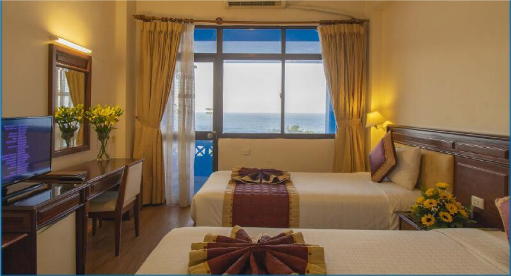

Phú Quốc được ví như một thiên đường biển đảo đẹp nhất Việt Nam. Ngoài
việc sở hữu vẻ đẹp của thiên nhiên, không khí của đất trời, Phú Quốc còn
được mẹ thiên nhiên ưu ái trao tặng những bãi biển cực đẹp với làn nước
trong veo, xanh ngát. Lưu lại top 10 bãi biển đẹp nhất Phú Quốc bên dưới
để vi vu cùng gia đình, bạn bè.

Nói đến du lịch thì không thể bỏ qua một hoạt động thú vị là cắm trại.
Hoạt động cho phép bạn hòa mình với thiên nhiên, tận hưởng khí trời và
gió nhẹ. Trong các địa điểm du lịch thì có lẽ Đà Lạt là nơi được lựa
chọn bởi sự mát mẻ của cao nguyên Lâm Viên. Cùng điểm qua top 10 điểm
cắm trại ở Đà Lạt cho chuyến đi sắp tới nhé.

Là một thành phố biển nằm gần trung tâm đô thị lớn nhất cả nước, với
phong cảnh biển lãng mạn Vũng Tàu đã và đang trở thành một điểm nóng du
lịch trong cả nước. Người dân thành phố Hồ Chí Minh và nhiều nơi khác
trên cả nước thường xuyên ghé thăm Vũng Tàu vào những dịp cuối tuần hay
lễ Tết. Điều đó đã làm nên sự đa dạng trong việc hình thành nên những
khách sạn Vũng Tàu nhằm mục đích phục vụ khách du lịch. Bài viết sau đây
sẽ giúp bạn trong việc đặt khách sạn Vũng Tàu thông qua top 3 các khách
sạn Vũng Tàu gần biển view đẹp nhất với giá thành từ thấp đến cao, xem
ngay bạn nhé!
Copyright © 2021. Designed and Deverloped by KHOA